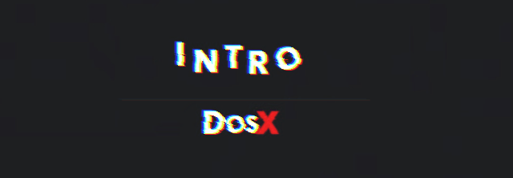
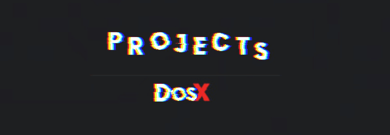
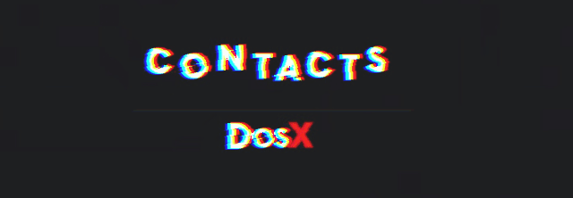

Кто я?

Долгое время я занимался разработкой обычного программного обеспечения под Windows и имел на счету около 20-ти активных проектов с аудиторией. На данный момент расширил свои навыки и уже занимаюсь разработкой нейросетей, веб-сайтов, серверного ПО. Одним
из главных отличительных умений является реверс и защита программного обеспечения от взлома. Также внёс вклад в развитие программного обеспечения для ядерной промышленности.
Основной сайт - kay-software.ru
Проекты

Большинство моих проектов делаются на заказ и не публикуются в общий доступ. Однако, Вы можете узреть мои самые удачные разработки:
[Де]генератор - нейросеть, созданная чтобы развеселить Вас. Выводит забавные новостные заголовки, основываясь на своей немаленькой базе данных.
NovellEngineX - бесплатный кроссплатформенный движок для создания и просмотра визуальных новелл-комиксов.
Kay Download Panel - красивая панелька для скачивания файлов с GitHub. Подходит для разработчиков, желающих выставить свои проекты напоказ.
Kay WAR (www.iskoa.ru) - уникальный в своём роде проект. Веб-движок для сайтов, позволяющий публиковать статьи без использования Backend'а на сайтах любой
сложности. Только статика! На данный момент право использовать разработку есть только у двух сайтов: kay-software.ru и
www.iskoa.ru. Официальной страницы проекта нет, также как и надобности в ней.
Контакты

Вы меня можете найти здесь: